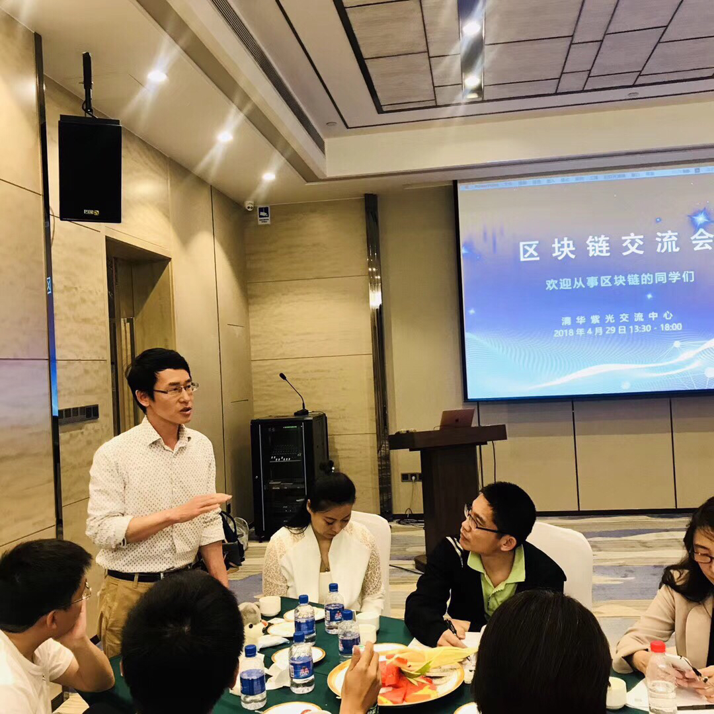
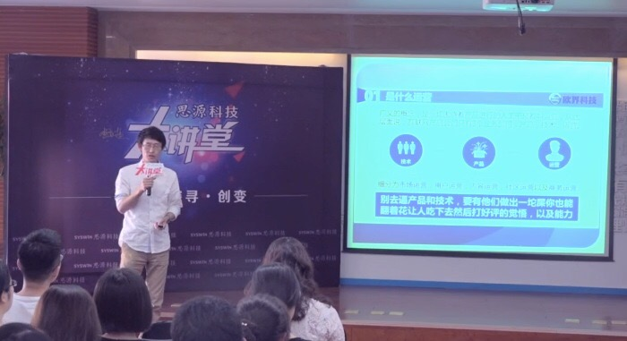
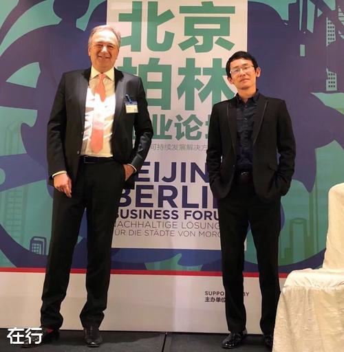
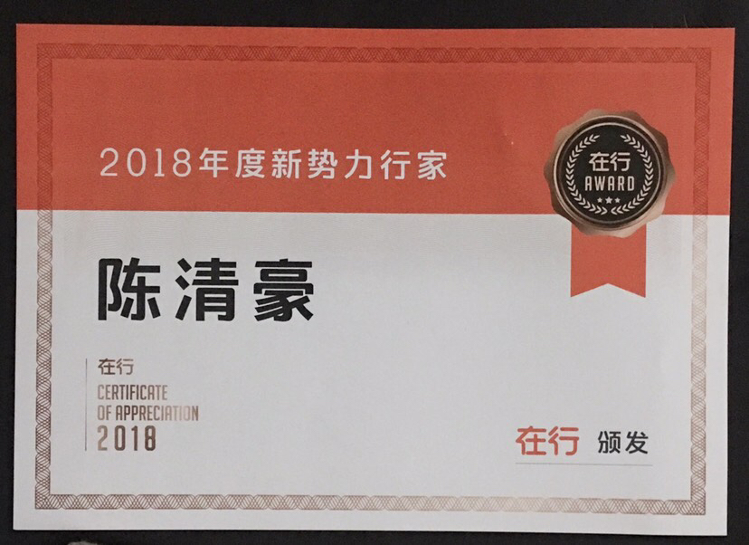

Ethan 是在行評選的年度行家，可提供職場發展、創業融資、互聯網營運策略與個人優勢發掘等方向的諮詢。他曾任世界 500 強公司的產品與技術高管，也曾擔任上市集團公司的營運中心副總。
他聯合創立 gOS、街旁網與暖島，參與多個創業項目從 0 到 1、從 1 到 10 的成長過程；目前作為創投機構合夥人，關注智能製造、消費升級與區塊鏈領域的早期投資。
Profile
Ethan 是在行評選的年度行家，可提供職場發展、創業融資、互聯網營運策略與個人優勢發掘等方向的諮詢。他曾任世界 500 強公司的產品與技術高管，也曾擔任上市集團公司的營運中心副總。
他聯合創立 gOS、街旁網與暖島，參與多個創業項目從 0 到 1、從 1 到 10 的成長過程；目前作為創投機構合夥人，關注智能製造、消費升級與區塊鏈領域的早期投資。
Contact
若想查看更完整的工作經驗與專業網絡，可從 LinkedIn 了解 Ethan 的職涯背景；若想預約一對一諮詢，可直接前往在行落地頁。
Consulting Modules
針對在學生與畢業生，協助釐清方向、選擇公司與職位、準備履歷與面試，並處理求職中的焦慮與家庭期待。
Career Timeline
Media




Reviews
每次開啟頁面都會同步原頁公開評論資料，並更新評論總數。每則評論保留原始主題、時間、用戶名稱與文字內容，方便快速理解 Ethan 的諮詢品質與服務風格。